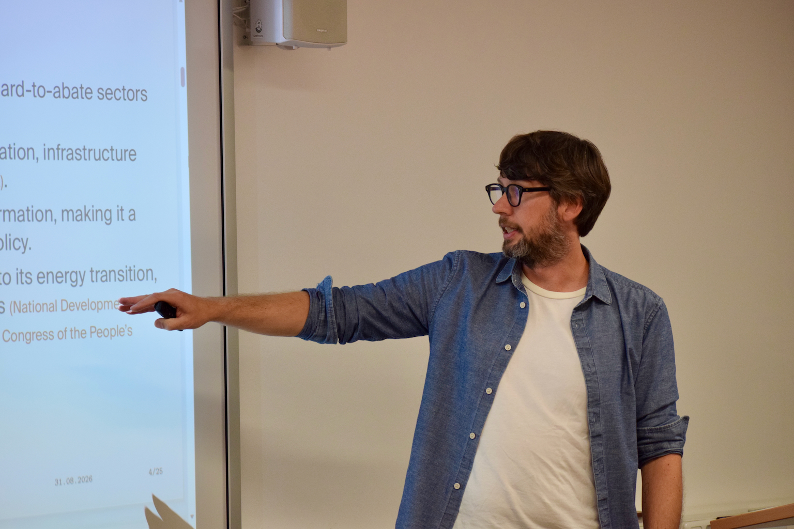

Research
My research sits at the intersection of international economics, industrial policy and environmental economics. I study how global value chains and foreign direct investment shape firm behaviour and environmental performance, and how industrial policy influences technological competition and the green transformation.
My empirical work draws primarily on firm-level and policy data from China, India and European economies. I combine information on firms’ production, ownership and international activities with measures of innovation, emissions, pollution abatement and environmental management, using applied microeconometric methods to study how firms respond to international integration and policy interventions.
Selected Peer-Reviewed Publications
Journal of Environmental Economics and Management · 2026 · 138, 103324
Upstreamness, Foreign Environmental Regulation and CO₂ Emissions in Indian Manufacturing Firms
Short summary: Upstreamness, Foreign Environmental Regulation and CO₂ Emissions in Indian Manufacturing Firms
Indian manufacturers further upstream emit more CO₂, both in absolute terms and relative to output. This relationship weakens in industries more exposed to stringent environmental regulation in export markets.
Journal of Development Economics · 2024 · 167, 103236
Journal of International Business Policy · 2026 · 9, 82–101
Green Gifts from Abroad? FDI and Firms’ Green Management
Short summary: Green Gifts from Abroad? FDI and Firms’ Green Management
Across 31 countries, foreign ownership is associated with greater adoption of green management practices. The relationship depends on host-country income and the environmental performance of the countries supplying its FDI.

Further Peer-Reviewed Publications
Journal of International Development · 2026 · 38(1), 88–111
Climbing the Coffee Global Value Chain—Three Decades of Trade and Upgrading
Short summary: Climbing the Coffee Global Value Chain—Three Decades of Trade and Upgrading
Trade data for 1991–2018 document uneven progress from raw coffee exports to processing. Industrial capacity, proximity to processing hubs, coffee varieties and trade policy are associated with different upgrading paths.
Journal of Environmental Planning and Management · 2026 · 69(1), 1–27
It’s Not a Sprint, It’s a Marathon: Reviewing Governmental R&D Support for Environmental Innovation
Short summary: It’s Not a Sprint, It’s a Marathon: Reviewing Governmental R&D Support for Environmental Innovation
The review finds that emissions pricing alone is insufficient to stimulate environmental innovation. Theory and evidence support complementing it with public R&D funding to advance clean technologies and reduce emissions.
Technological Forecasting & Social Change · 2025 · 213, 123985
Industry & Innovation · 2022 · 29(5), 672–700
Stepping Up to the Mark? Firms’ Export Activity and Environmental Innovation in 14 European Countries
Short summary: Stepping Up to the Mark? Firms’ Export Activity and Environmental Innovation in 14 European Countries
Exporting is associated with greener production processes, particularly in Eastern European firms. Across the sample, exposure to export markets with stringent market-based environmental policies is linked to greater adoption of environmental innovations.
Journal of International Development · 2017 · 29(3), 287–307
Brazil’s Development Cooperation: Following in China’s and India’s Footsteps?
Short summary: Brazil’s Development Cooperation: Following in China’s and India’s Footsteps?
Brazil’s development cooperation is shaped mainly by historical and cultural links, with some attention to recipient need and governance. The findings challenge the idea that emerging donors allocate aid solely to advance their own interests.
Other Academic Publications
Firms’ Global Value Chain Participation and Its Environmental Performance: A Review of the Empirical Literature
In F. J. Díaz López, M. Mazzanti and R. Zoboli (eds.), Handbook on Innovation, Society and the Environment. Edward Elgar Publishing, pp. 125–139.
Work in Progress
Unveiling the Green Trail: FDI, Global Value Chains and Firm Pollution in China
Under review
How foreign ownership and firms’ positions in global value chains interact in shaping pollution abatement in Chinese manufacturing.
Tournament Industrial Policy: China’s Subnational Competition for Hydrogen Leadership
How subnational governments in China compete for hydrogen leadership and how their policy choices affect technological innovation.
Green Public Financial Support and the Policy Mix: Drivers of Firms’ Environmental Innovation
How green public financial support interacts with regulation and market incentives in firms’ adoption of environmental innovations.
Disentangling the Effects of Domestic Customer Collaboration on Exports: The Information and Innovation Effects
Whether collaboration with domestic customers helps firms export through better market information and innovation.
Invited Seminars, Conferences & Workshops
Invited Seminars
Université Paris 1 Panthéon-Sorbonne
July 2027 (scheduled), Paris, FranceTinbergen Institute Spatial Economics Seminar
February 2027 (scheduled), Amsterdam, NetherlandsVrije Universiteit Amsterdam
November 2026 (scheduled), Amsterdam, NetherlandsGerman Council of Economic Experts
2026, Berlin, GermanyEuropean Commission JRC Industrial Innovation and Dynamics Seminar
2023, Seville, SpainDepartment of Economics and Management, University of Ferrara
2022, Ferrara, ItalyTrinity College Economic Seminar
2019, Dublin, Ireland
Selected Conferences
World Congress of Environmental and Resource Economists (WCERE)
2026, Lisbon, PortugalDRUID Conference
2026 and 2019 (poster), Copenhagen, DenmarkGDE Conference and 1st Conference of the EDEG
2026, Kiel, GermanyGeography of Innovation Conference (GeoInno)
2026, Budapest, HungaryKiel–Göttingen–CEPR Conference on China in the Global Economy
2025, Berlin, GermanyEuropean Association of Environmental and Resource Economists (EAERE) Annual Conference
2024, Leuven, Belgium; 2021, online and 2019, Manchester, United KingdomEuropean Trade Study Group (ETSG) Annual Conference
2024, Athens, Greece and 2019, Bern, SwitzerlandVerein für Socialpolitik Annual Meeting
2022, Basel, Switzerland and 2019, Leipzig, GermanyResearch Conference “Sustainability in Global Value Chains”, co-organised by UNIDO
2021, onlineEconomic Geography and International Trade Research Meeting
2020, Kiel, GermanyPEGNet Conference
2019 (poster), Bonn, Germany
Selected Workshops & Symposia
Economics of Low-Carbon Markets
2026, Oldenburg, GermanySymposium “Europe’s Industrial Policy Options in the Digital, Green and Geoeconomic Transitions”
2026, Hannover, GermanyAarhus–Kiel Workshop
2025, 2024, 2018 and 2017, Sonderborg, DenmarkSociety for Eco-Innovation Studies Workshop
2024, HEC Paris, FranceSEEDS Annual Workshop
2023, Ferrara, Italy; 2020, onlineGöttingen Workshop on International Economics
2022, 2020 and 2019, Göttingen, GermanyCentre for Research in Circular Economy, Innovation and SMEs Workshop
2019, Ferrara, ItalyINFER Workshop on Environment and Development Economics
2019, Coimbra, Portugal